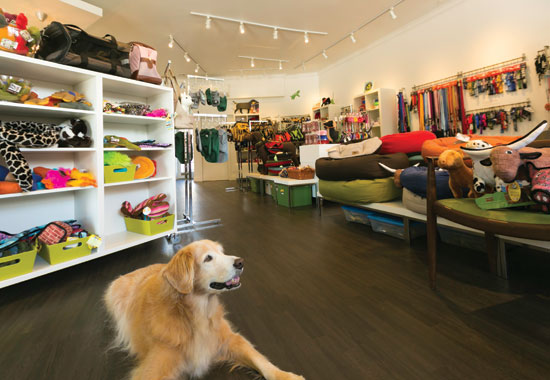

Welcome
Around the Shop

The Team

| FionaFiona has been around animals of all types from a very early age. She has always had a keen interest and love of animals and enjoys spending time with her many pets and sharing her knowledge with others. Fiona has a GNVQ in animal care and husbandry and has had many years experience with a vast array of animals including cats, horse's small companion animals and even owls. Fiona is also a qualified nutritional advisor and is always on hand to discuss your pet's best dietary needs. This can often have a profound effect on not only the general wellbeing of your pet, but also their behaviour too. Fiona has been in the pet trade for the past 18 years and has gained vast experience both dealing with customers and knowledge of products available for your pets. |
|
| SallySally qualified as a competent dog groomer at Classic Canine Cuts in October 2013 and has since built up a huge client list through her high standard of work and recommendations. Sally has a passion for providing your dogs with the best possible care and attention during their visits, and strives to meet with your pets requirements. She aims to create the correct look for your dog and understands the varying requirements for different breeds and lifestyles. Sally says it can be very satisfying to see a dog transform and know they are feeling more comfortable after their groom. She also has a good understanding of your pets nutritional needs and can advise you on how diet can affect your dogs coat and skin conditions. She is very proud of her work and has many happy loyal clients. She looks forward to meeting you and your dogs and providing them with that extra special attention needed throughout their life. |